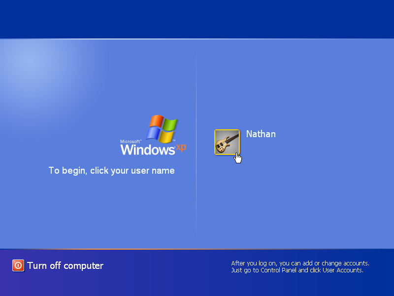
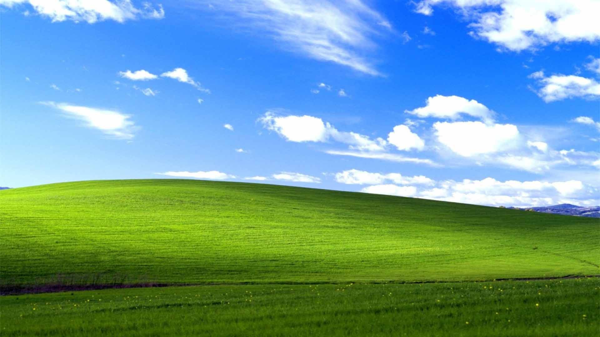

Desktop

Zaslon dobrodošlice

Windows XP je drugi predstavnik obitelji operacijskih sustava Windows NT, objavljen je 25. listopada 2001. godine. Početci ovog operacijskog sustava sežu sve do 1990. god., do projekta pod kodnim imenom Neptune, no taj projekt je prekinut pa je kodno ime ovog operacijskog sustava postalo Whistler. Windows XP potpuno napušta MS-DOS kao svoju jezgru, te tako još više nadograđuje već odličnu stabilnost svog prethodnika. Sam naziv ovog operacijskog sustava – XP značio je iskustvo (eng. experience). Za promociju Windows-a XP Microsoft je koristio geslo „Da, možeš“ (eng. Yes, you can). Operacijski sustav Windows XP je početno objavljen u dvije verzije: Kućna (eng. Home) i Profesionalna (eng. Professional), a kasnije su razvijene verzije za računala s TV karticom, zatim za računala s ekranima na dodir, a za države u razvoju i Starter verzija. Posebne verzije, naslovljene Windows XP N i Windows XP KN su se prodavale bez Microsoftovih programa (kao npr. WMP), zbog optužbe za monopol, no te verzije nisu zaživjele, a broj korisnika je izuzetno malen. Windows XP je donio dugo iščekivane vizualne promjene u grafičko sučelje sustava, u njemu je bilo moguće primjenjivati razne teme, koje su omogućile veliku mogućnost personalizacije računala, a dodan je i zaslon dobrodošlice. Naime, Windows XP, zajedno sa plavom Luna temom i Bliss pozadinom radne površine je postao sinonim za osobna računala skoro čitavo desetljeće. Uz dodatak ClearType tehnologije za uglađivanje fontova i redizajniran Start izbornik, koji sada ima dva stupca, te brojne promjene u traci zadataka, Windows XP je postao mnogo poželjniji operacijski sustav nego bilo koji njegov prethodnik, o čemu svjedoči činjenica da je Microsoft morao produžavati period podrške za Windows XP za dodatne tri godine, zbog silne popularnosti ovog operacijskog sustava, kojeg i danas koristi oko 4% korisnika računala diljem svijeta (ako se u obzir uzmu i korporacije, te bankomati i sl.). Windows XP je donio i mnogo novih mogućnosti, kao npr. prijavu korisnika bez prethodne odjave drugog korisnika, koncept predmemoriranja je omogućio Windows-u da unaprijed učita datoteke koje se redovno koriste, što je ubrzalo rad računala. Također je omogućen i povratak na prethodni upravljački program, a uveden je i sustav zaštite od piratstva pod nazivom WPA, koji je za zadatak imao zaustavljanje distribuiranja nelicenciranih inačica operacijskog sustava Windows. Važno je napomenuti da je Windows XP prvi operacijski sustav Windows koji je imao podršku za udaljeno korištenje računala. Za Windows XP su objavljena tri servisna paketa. Prvi servisni paket je objavljen 2002. godine, a sadržavao je niz ispravaka, dodao podršku za USB 2.0 i omogućio postavljanje zadanih programa (što se zadržalo do danas). Drugi servisni paket je objavljen 2004. godine, a donio je bolju enkripciju za bežične mreže, djelomičnu Bluetooth podršku, poboljšan vatrozid, dodan Centar za sigurnost i blokator izvođenja programa (DEP). Treći servisni paket je objavljen 2008. godine, a sadržavao je mnoge stvari koje su preuzete iz nasljednika Windows-a XP, Windows Viste. Sigurnost je sa trećim servisnim paketom nadalje poboljšana, preko 1100 grešaka je ispravljeno, dodana je još bolja enkripcija bežičnih mreža, poboljšana kompatibilnost s fotoaparatima i poboljšan je protokol za udaljeno korištenje računala. Također je bitna informacija da postoje još tri verzije operacijskog sustava Windows XP, a to su: Windows Embedded 2009 za automate i bankomate, Windows Server 2003, koji je arhitekturom identičan ali je namijenjen za serverska računala, i 64-bitna verzija Windows-a XP, ujedno i prvi 64-bitni Windows. Verzija Windows Embedded 2009 je bila podržana do travnja 2019. godine, dok je podrška za ostale verzije završila u travnju 2014. godine. Iako podrška za operacijske sustave Windows inače traje 10 godina, za Windows XP je trajala 13 godina, zbog toga što je Windows XP bio ogroman hit, te je postao svjetski fenomen softverske industrije. O njegovoj popularnosti dovoljno govori podatak da je Windows XP bio najkorišteniji operacijski sustav sve do kolovoza 2012. godine, iako su postojali moderniji operacijski sustavi. Windows XP je tako svojom nevjerojatnom popularnošću zauzeo svoje mjesto u srcima mnogih računalnih entuzijasta, te će vjerojatno zauvijek ostati jedan od najboljih operacijskih sustava svijeta.
Predstavljen: 2001.
Arhitektura: 64-bitna i 32-bitna
Podrška: Završila
Stranica je kreirana u sklopu kolegija Informatički Projekt 1 na Fakultetu prirodoslovnih matematičkih i odgojnih znanosti Mostar.
FPMOZ© 2021